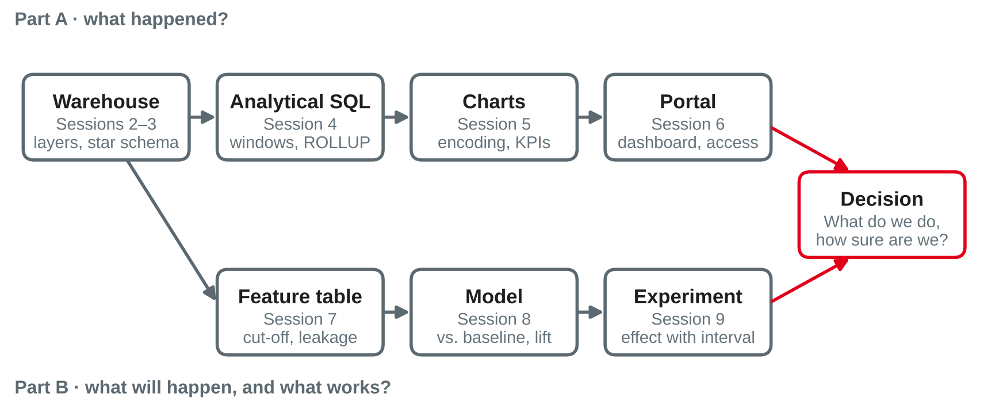

Data Analytics
Parts A–B in review · portfolio checklists · consultations · peer feedback · first findings of the partner projects
DHBW Mannheim · Data Science and Artificial Intelligence · Semester 5
Your preparation: your current notebook and a list of open questions. Which question would you ask first?
What connects sessions 2–9

Own illustration based on Kimball and Ross (2013), Chapman et al. (2000) and Kohavi et al. (2020).
| Session | Core idea | Typical mistake |
|---|---|---|
| 2 Warehouse architectures | Know the layer and the definitions of your data | Trusting a mart figure without checking how it is defined |
| 3 Dimensional data and OLAP | Grain first; facts at that grain, dimensions for context | Mixing grains; type 1 overwrite where history matters |
| 4 Analytical SQL | Windows keep rows; ROLLUP and CUBE add subtotals | WHERE filters before the window function runs |
| 5 Visualisation | Position on a common scale; one message per chart | Truncated axes, incomplete periods |
| 6 Analytics portals | Define metrics once; authorise where the data is queried | Averaging ratios; security only in the user interface |
Own summary of sessions 2–6, based on Kimball and Ross (2013) and Knaflic (2015).
| Session | Core idea | Typical mistake |
|---|---|---|
| 7 From business question to ML use case | Frame the decision; features only from before the cut-off | Leaky features; accuracy as the yardstick |
| 8 ML use-case lab | Pipeline, time-aware validation, comparison with a baseline | Random split of time-ordered data; tuning on the test set |
| 9 Experiments and A/B testing | Randomise; effect with interval; trust checks first | Peeking, fishing in segments, ignoring an SRM |
One thread runs through all three: would this result hold in production — and would it change the decision?
Own summary of sessions 7–9, based on Chapman et al. (2000), Kaufman et al. (2012) and Kohavi et al. (2020).
Answer briefly in pairs — without your notes.
rank() and dense_rank() give 1, 2, 2, ? — what comes next in each?Portfolio work, consultations and feedback
Portfolio lab
Work in pairs on notebook 1 or 2 — or finish the lab of session 9. Use the checklists on the next slides.
Consultations
Every pair gets a slot at their table. Bring one concrete question and the cell where you are stuck.
Peer feedback
Two pairs swap notebooks and give structured feedback against the checklist.
Partner projects
Each team shares its first findings and open questions for the semester-6 project.
A good question often answers itself while you write it down. If it does — even better: note it in your notebook as a decision.
What a good notebook shows
Own compilation based on Kimball and Ross (2013) and Knaflic (2015).
Own compilation based on Chapman et al. (2000), Kaufman et al. (2012) and Provost and Fawcett (2013).
tpch.duckdb (or a downloadable public dataset)random_state or seeds wherever randomness is involvedBased on Sandve et al. (2013).
"Suitable" is a judgement with reasons, not a score. "A simple rule is enough" can be the best-argued verdict.
Own compilation based on Chapman et al. (2000, evaluation phase) and Provost and Fawcett (2013).
Swap notebooks with another pair. Read for 10 minutes, then give feedback using the checklist.
Feedback is about the work, not the people — and it is useful only if the receiving pair can act on it.
Based on Hattie and Timperley (2007).
Preparing the semester-6 projects
Each team presents in a few minutes, following the project brief from session 1:
Information from the partner companies is confidential: no names, no data, no screenshots in public repositories, chats or the course website.
Topic: Presented by the partner company in session 1
Topic: Presented by the partner company in session 1
In your project team, discuss and note:
Optional slides for common questions
import duckdb
con = duckdb.connect("tpch.duckdb")
con.sql("INSTALL tpch; LOAD tpch; CALL dbgen(sf = 0.1)") # session 2
# then run the CREATE TABLE statements of session 3, lab step 1:
# dim_customer, dim_date, fact_sales — and dim_part (lab task 1)
for t in ["fact_sales", "dim_customer", "dim_date", "dim_part"]:
print(t, con.sql(f"SELECT count(*) FROM {t}").fetchone()[0])fact_sales 600,572 · dim_customer 15,000 · dim_date 2,406 · dim_part 20,000churn_features (session 7): 10,000 rows, 3,446 churnersOwn example based on TPC-H data (Transaction Processing Performance Council, n.d.).
| Trap | Symptom | Fix |
|---|---|---|
WHERE before the window | lag() returns only NULLs | Filter in an outer query or with QUALIFY |
| Wrong denominator | "Revenue per customer" is a third lower than expected | Say: per active customer — 10,000 of 15,000 have orders |
| Incomplete period | 1998 "collapses" | Orders end on 2 August 1998: compare complete periods |
| NULL vs. 0 | Ratios of customers without history become 0 | nullif in the denominator; NULL means "undefined" |
Own compilation based on TPC-H data (Transaction Processing Performance Council, n.d.).
| Trap | Symptom | Fix |
|---|---|---|
| Leaky feature | Lift or AUC "too good to be true" | Rebuild every feature with data before the cut-off only |
| Preprocessing outside the pipeline | Validation score slightly too high | Put imputing and scaling into the Pipeline |
| Accuracy with unequal classes | "Nobody churns" scores 65.5 % | Lift, profit, precision at capacity |
| Peeking at an experiment | "Significant" on day 4 | Planned sample size, one analysis — or a sequential method |
Own compilation based on Kaufman et al. (2012), Provost and Fawcett (2013) and Kohavi et al. (2020).
Preparation: check that import statsmodels works, and think of one time series from your company: what is measured, how often, and since when?